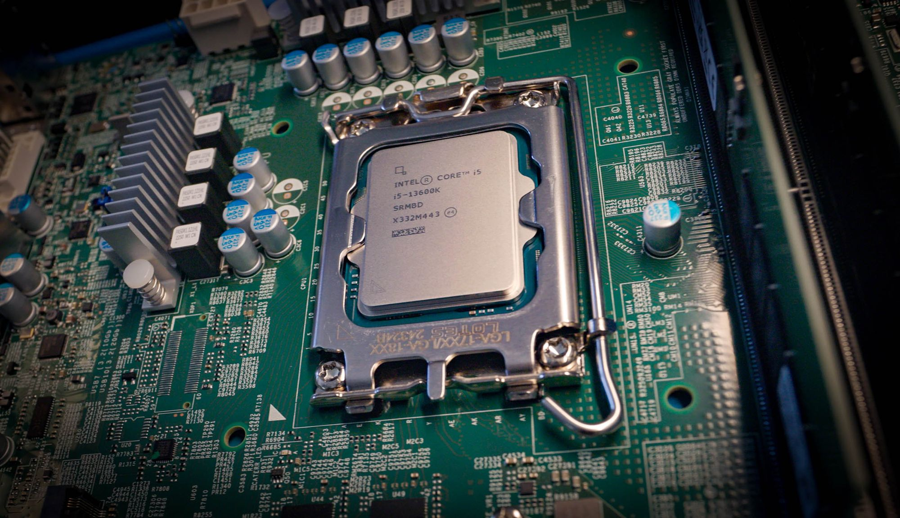

Computer Hardware: CPU and Memory
This presentation provides an overview of key computer components: the Central Processing Unit (CPU) and Memory.

What is the CPU?
The Central Processing Unit (CPU) is often referred to as the brain of the computer. It performs most of the processing by executing program instructions.
- Executes program instructions
- Coordinates hardware operations
Key components:
- ALU – Arithmetic and logic operations
- Control Unit – Directs processor operations
- Registers – High-speed storage for temporary data
CPU Instruction Cycle
- Fetch: Retrieve instruction from memory
- Decode: Translate to CPU-understandable format
- Execute: Carry out the instruction
Types of CPUs
- Single-Core CPU – One processing unit (e.g., Intel Pentium 4)
- Multi-Core CPU – Multiple cores for parallel processing (e.g., AMD Ryzen 7)
- Hyper-Threading CPU – Simultaneous thread handling (e.g., Intel i7-10700K)
- ARM-based CPU – Efficient, RISC-based (e.g., Apple M2, Snapdragon 8 Gen 2)
CPU Architecture: RISC vs. CISC
RISC (Reduced Instruction Set Computing):
- Simpler instructions, faster execution
- Example: ARM, MIPS
CISC (Complex Instruction Set Computing):
- Complex instructions, fewer lines of code
- Example: Intel x86, AMD Ryzen
Popular CPUs
Intel:
- i5-13600K – 14 cores / 20 threads (Gaming & Productivity)
- i9-13900K – 24 cores / 32 threads (High-end)
AMD:
- Ryzen 5 7600X – 6 cores / 12 threads
- Ryzen 9 7950X – 16 cores / 32 threads
ARM:
- Apple M2 – 8-core CPU, 10-core GPU
- Snapdragon 8 Gen 2 – Mobile devices
Factors Affecting CPU Performance
- Clock Speed – Measured in GHz; affects execution speed
- Cores & Threads – Enables multitasking and parallelism
- Cache Size – Faster data access for common tasks
- Architecture – Impacts instruction handling
- TDP (Thermal Design Power) – Heat output and energy efficiency
Memory Overview
- RAM (Random Access Memory): Volatile, temporary storage for active processes
- ROM (Read-Only Memory): Non-volatile, stores firmware and boot instructions
Memory Hierarchy
Memory in computers is structured in a hierarchy for performance and cost efficiency:
- Registers – Fastest, built into the CPU
- Cache – L1, L2, L3: Small but fast memory close to CPU
- RAM – Primary memory for active tasks
- Virtual Memory – Uses storage (e.g., SSD/HDD) to extend RAM